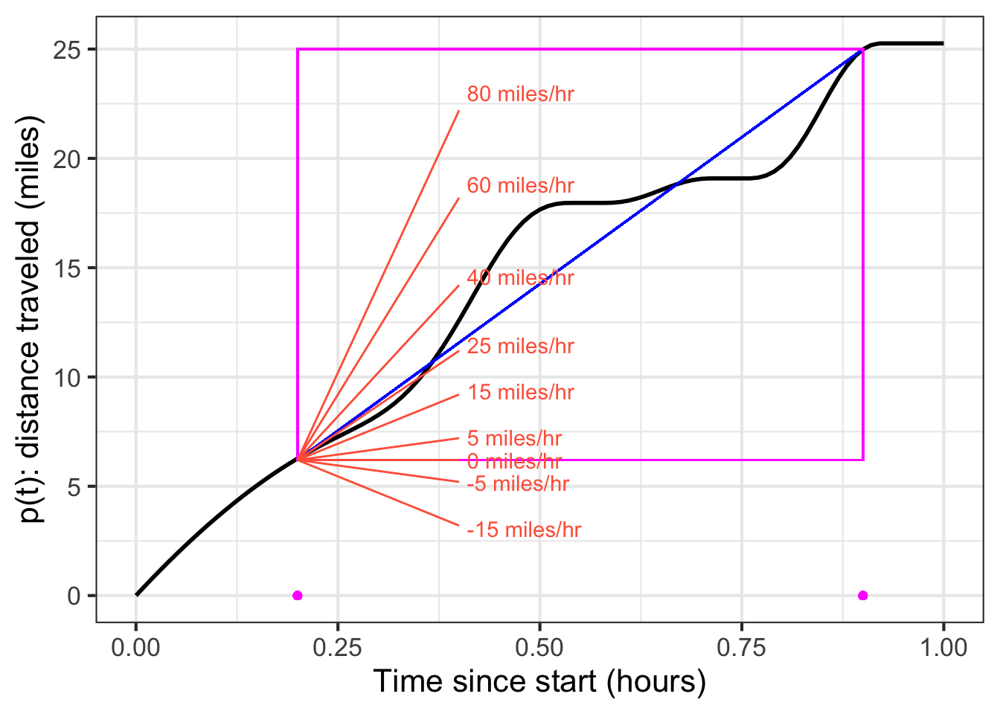
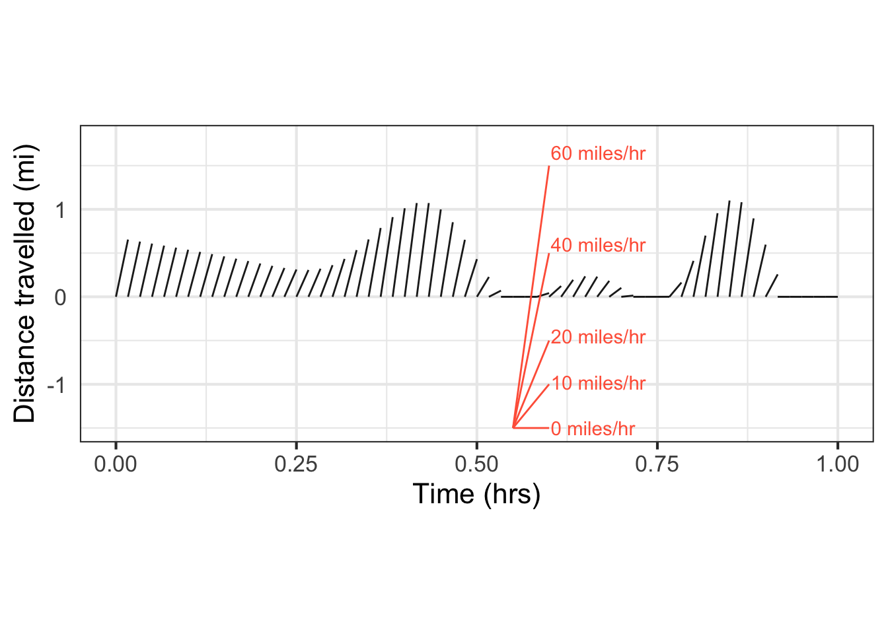
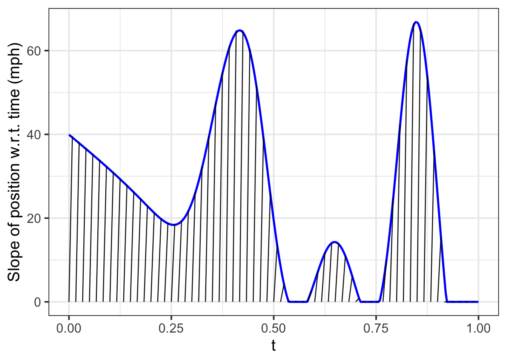
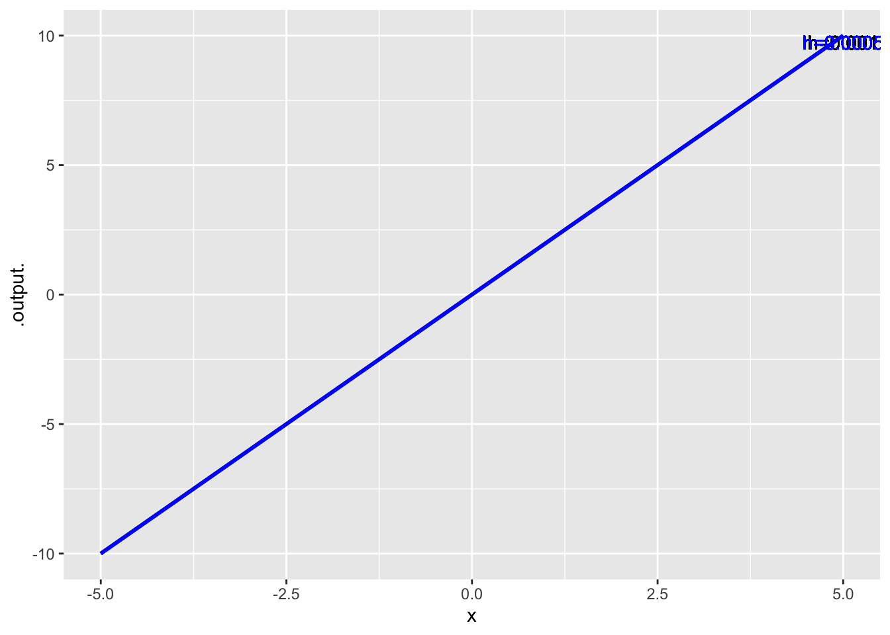

changeFun <- function(tilde, h = 0.001, ...) {
f <- makeFun(tilde, ...)
cf <- function(t) {
f(t+h) - f(t)
}
return(cf)
}17 2025-02-20 class notes
From last time: Simulated Galileo’s ramp experiment
We found that putting bells at positions \(0, 1, 4, 9, 16, 25, 36\) created a steady beat of sounds. This means that the ball took equal intervals of time to run between successive bell positions.
- Positions \(0, 1, 4, 9, 16, 25, 36\)
- First-differences \(1, 3, 5, 7, 9, 11\)
We can all see the pattern here: the positions are the perfect squares (where the interval between the first two bells is 1). The first differences are even easier: the odd integers.
Galileo would have understood Platonic ideas. Things that do not change are the ideal, e.g. the stars, the Earth. Things that change in an orderly way—motion of the planets—are less idea, but understandable. Things that change in a disorderly way—meteorites, or meteorolgy (the weather)—are not subject to understanding. Galileo would look for an even simpler pattern in the equal time positions. The first difference is simple, but simpler still is the second differences.
- Second-differences: \(2, 2, 2, 2, 2\)
Galileo could have summarized his findings thus:
Under the motion induced by gravity, position is predictable. The position reached after equal increments of time are such that their second differences are constant.
We can imagine that young Newton, who knew about Galileo’s findings, would have found things not to like.
- Motion is continuous. Can we describe it in a continuous way?
- The size of the “second differences” depends on the unit spacing between the bells. Could we make this unit much, much smaller?
- Are there situations where motion works differently? Rolling along a level board: first-differences are constant! A boat coming into dock: first differences get smaller! Does it make sense to express both of these situations in terms of the second differences?
It was well understood among mathematicians that “analytic expressions” describe curves. Is motion about turning one kind of curve into another, e.g. going from first- or second-differences to positions?
“Pierre de Fermat also pioneered the development of analytic geometry. Although not published in his lifetime, a manuscript form of Ad locos planos et solidos isagoge (Introduction to Plane and Solid Loci) was circulating in Paris in 1637, just prior to the publication of Descartes’ Discourse. Clearly written and well received, the Introduction also laid the groundwork for analytical geometry. The key difference between Fermat’s and Descartes’ treatments is a matter of viewpoint: Fermat always started with an algebraic equation and then described the geometric curve that satisfied it, whereas Descartes started with geometric curves and produced their equations as one of several properties of the curves. As a consequence of this approach, Descartes had to deal with more complicated equations and he had to develop the methods to work with polynomial equations of higher degree. It was Leonhard Euler who first applied the coordinate method in a systematic study of space curves and surfaces.” Source
- Reminder: Metaphor of Anglo-Saxon and Norse intermarriage resulting in the simplification of English. Anglo-Saxon and Norse had different verb inflections, adding cognitive load to communication. Dropping both sets of inflections, replacing them with word order and prepositions, made the language easier to share.
Two starts to modern calculus:
- Newton: fluents and fluxions: \(x\), first differences \(\dot{x}\), second differences \(\ddot{x}\).
- Leibniz: infinitesimals: the increments dx and dt
17.1 How this was described in early days
Show John Adam’s copy of l’Hôpital’s textbook.
- Graphs are at end of book, not a function among them.
Simpsons Doctrine and Application of Fluxions Vol.1.p.150. Scholium 134 Link
[The following is copied from the above source.]
[In t]he Beginning of this and the preceeding Sections, We have seen how the Fluxions of Quantities are determined by conceiving the generating Motion, to become uniform to the proposed Positions: but hitherto no notice as been taken of the method of Increments or indefinitely little Parts, used and mistaken by many for that of Fluxions, in which the operations are, for the general Part exactly the same and which, tho less accurate, may be applied to good purpose in finding the Fluxions themselves in many cases to show the Beginner how the two Methods differ from each other.
The Fluxions of Quantities are always measured by how much the quantities themselves would be uniformly augmented in a given time. Therefore if two quantities or lines [?] A.B. and C.D. be generated together by the uniform or equable action of the Points B. and D. it follows that [?] any span Bb and Dd actualy gone over whereby AB and CD. are augmented, in the same time will nearly [?] express the Fluxions of the given lines A.B and C.D. whence it appears that the Increments or Spans [?] actually gone over and the Fluxions are the Same in tis case, where the generating Velocities are equable,

but if on the contrary, the velocities of the two Points in generating the Increments Mb and Nd be Supposed either to increase or decrease, the Lines or Increments so generated will no longer express the Fluxions of A.B. and C.D. being greater or less than the Spans [?] that might be uniformly described in the Same time with the Velocities at M. and N.
[I]f indeed those Increments and the time of this Description be taken so small that the motion of the points during that time may be considered as equable, The Ratio of the said Increments will then express that of the Fluxtion [?] or be as the Velocity of M. to that at N, indefinitely near but cannot be conceived to be strictly so; unless, perhaps in certain particular cases.
Hence We See tht the Differential Method, which proceeds upon those indefinitely little Increments, actually generated as we do upon Fluxions, or the Spaces that might be uniformly generated differs little or nothing from the Method of Fluxions, except in the manner of conceptions, and in point of accuracy, wherein it appears defective: and yet it is very certain the conclusions thiw way derived are mathematically true.
For although the whole compleat Increment is actually understood by the Notation and first Deffinition of the Differential Method yet in the Solution of Problems the exact Measure thereof is not taken, but only that Part of it which would arise from an uniform increase, agreable to the Notion of a Fluxion; whih admits of a strict demonstration. But after all the Differential Method has on advantage above that of Fluxions, which is, we are not here obpliged to introduce the Properties of Motion. Since We reason upon the Increments themselves, and not upon the manner in which they may be generated.
17.2 A function and it’s change over a small interval

We’ll divide the x-axis into 60 equal segments, then plot out the change in the function from the start to the end of the segment. The height of each sloping graph is the amount of change during the segment.

Now to convert that “change” into a rate of change, just divide by the small interval of time. That is, divide by 1/60.

17.3 Definition of the “change function”
The changeFun() function will be a new function that describes how much the function given as an argument changes in an increment of time \(h\).
Show that changeFun() depends on h
cf1 <- changeFun(x^2 ~ x, h=0.001)
cf2 <- changeFun(x^2 ~ x, h=0.0005)
slice_plot(cf1(x) ~ x,
domain(x = -5:5),
label_text = "h=0.001") |>
slice_plot(cf2(x) ~ x,
color = "blue",
label_text = "h=0.0005") 
Modify this to become the “rate of change” function.
rateOfChangeFun <- function(tilde, h = 0.001, ...) {
f <- makeFun(tilde, ...)
cf <- function(t) {
(f(t+h) - f(t)) / h
}
return(cf)
}rcf1 <- rateOfChangeFun(x^2 ~ x, h=0.001)
rcf2 <- rateOfChangeFun(x^2 ~ x, h=0.0005)
slice_plot(rcf1(x) ~ x,
domain(x = -5:5),
label_text = "h=0.001") |>
slice_plot(rcf2(x) ~ x,
color = "blue",
label_text = "h=0.0005") 
17.4 Algebra
Let’s compute the rate-of-change function for \(f(x) \equiv x^2\)
\[ \frac{f(x + h) - f(x)}{h} = \frac{x^2 + 2hx + h^2 - x^2}{h} = \frac{2hx + h^2}{h} = 2x + h\] Since \(h\) can be as small as we want to make it, let’s treat it as zero, so the rate of change of \(x^2\) is \(2x\).